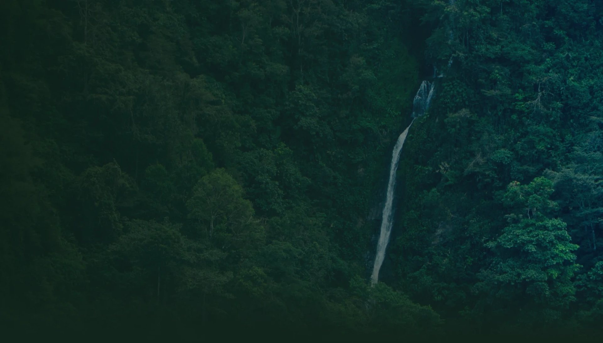
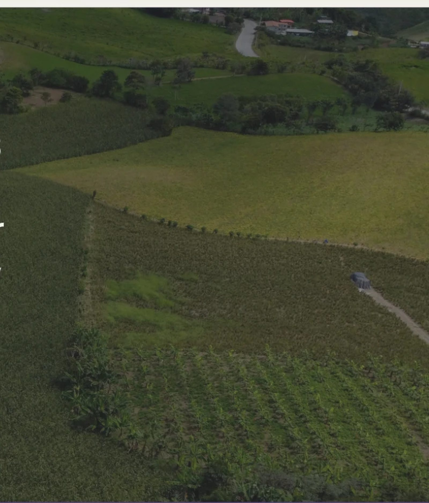
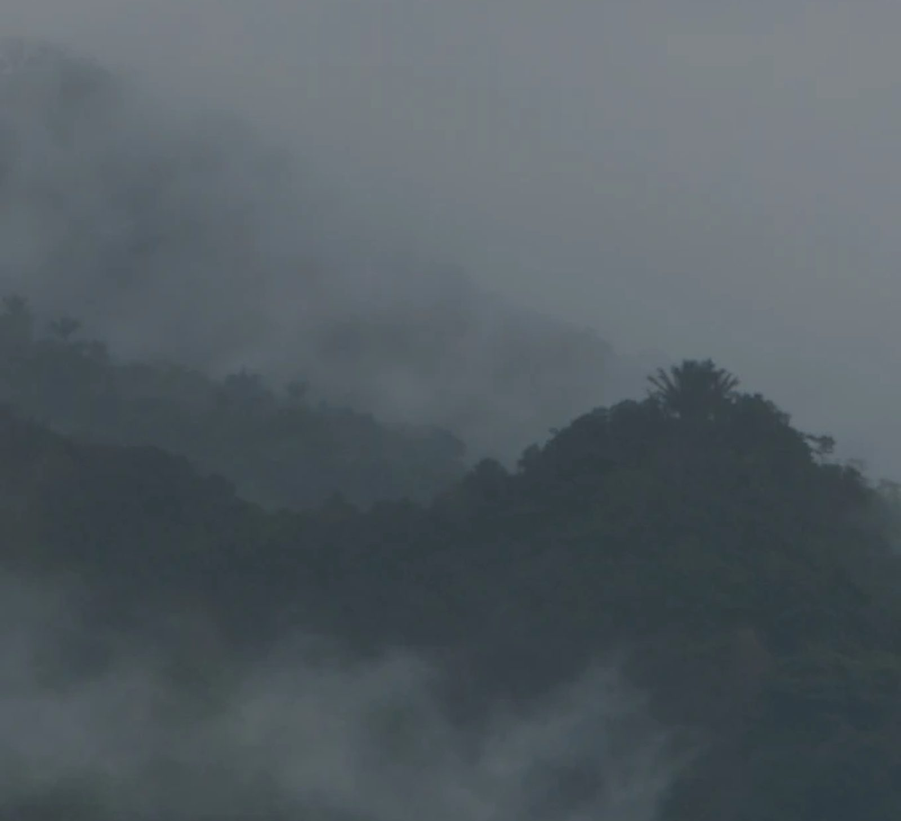

Central Hidroeléctrica · Valle de Intag, Ecuador
Energía
en armonía.
Transformamos de forma eficiente y consciente la fuerza del agua en energía renovable, impulsando la sostenibilidad real con nuestras comunidades y el fortalecimiento del Ecuador.
Valle de Intag, Ecuador
01 / Ingeniería al servicio del país
Hidroeléctrica
Nasca
Trayectoria, experiencia y compromiso con el desarrollo del país.

48.5 MW
Capacidad instalada
342 GWh
Energía limpia generada
14
Comunidades en el área de influencia directa
Feb 2024
Aprobación técnica de conexión a la Subestación Manduriacu.
Jun 2026
Consulta Ambiental participativa con respaldo mayoritario del territorio.
Jul 2026
Emisión oficial de la Licencia Ambiental.
Próxima etapa
Construcción y Operación Responsable.
02 / Sostenibilidad Real
Presencia
constante.
Diálogo abierto.
Trabajo conjunto en las 14 comunidades del Valle de Intag.
Valle de Intag · 14 comunidades
AID

Esquema ilustrativo. No representa ubicación ni escala geográfica exacta.
Cielo Verde
85% de las personas censadas
Comunidad AID
Zona técnica
Estado del censo socioeconómico
12
Mingas 2026 realizadas
3
Proyectos activos
Acuerdos locales
- Programa de Reforestación Nativa
- Priorización de Mano de Obra
El Rosal
Estado del censo socioeconómico
Edita este panel con la información de la comunidad.
Santa Rosa
Estado del censo socioeconómico
Edita este panel con la información de la comunidad.
San Francisco
Estado del censo socioeconómico
Edita este panel con la información de la comunidad.
Eje ambiental
Reforestación, monitoreo fluvial y protección de cuencas.
Eje social
Mano de obra local, compras en territorio y desarrollo productivo.

03 / Somos Nasca
“Desde el Valle de Intag, transformamos la fuerza del agua en energía renovable con ingeniería de vanguardia para crear sostenibilidad real, moviendo hogares y generando progreso para todo el Ecuador.”
— Equipo Nasca

Conoce Nasca
Contamos con rigor técnico de ingeniería ecuatoriana con presencia en territorio. Nuestra cultura y equipo aseguran una gestión responsable con las necesidades de nuestras comunidades.
04 / Cumplimiento y transparencia
Canal Comunitario
Oportunidades Locales
Con el objetivo de promover el desarrollo local incorporamos un proceso de registro para vinculación, mano de obra y servicios locales.
Sistema de Atención Comunitaria
Incorporamos un canal para el registro de requerimientos, solicitudes y observaciones comunitarias.
Conoce nuestros estándares internacionales
No solo cumplimos la normativa nacional, nuestros estándares internacionales exigen mayor responsabilidad y una sostenibilidad real.